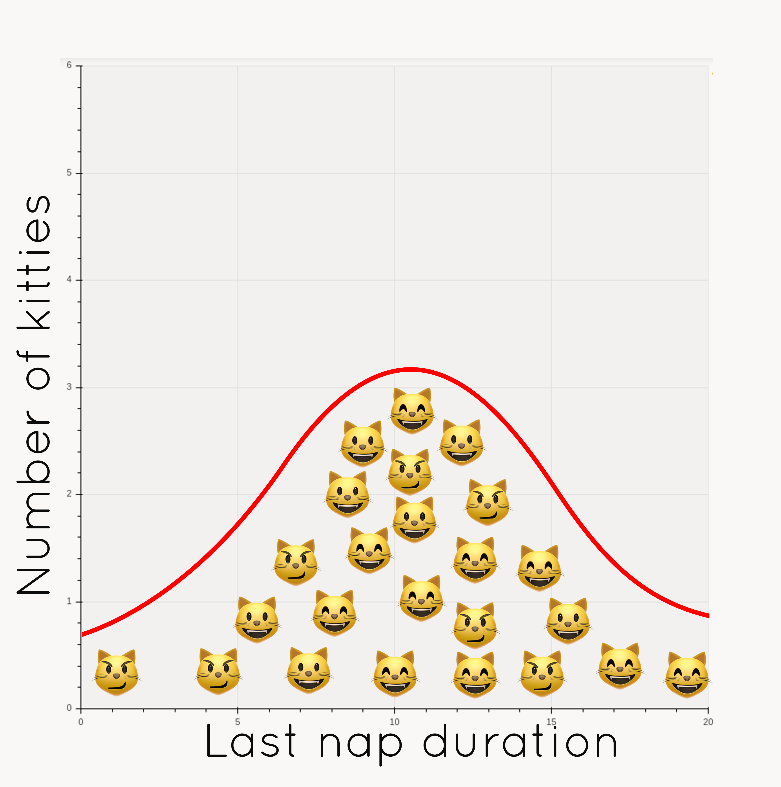
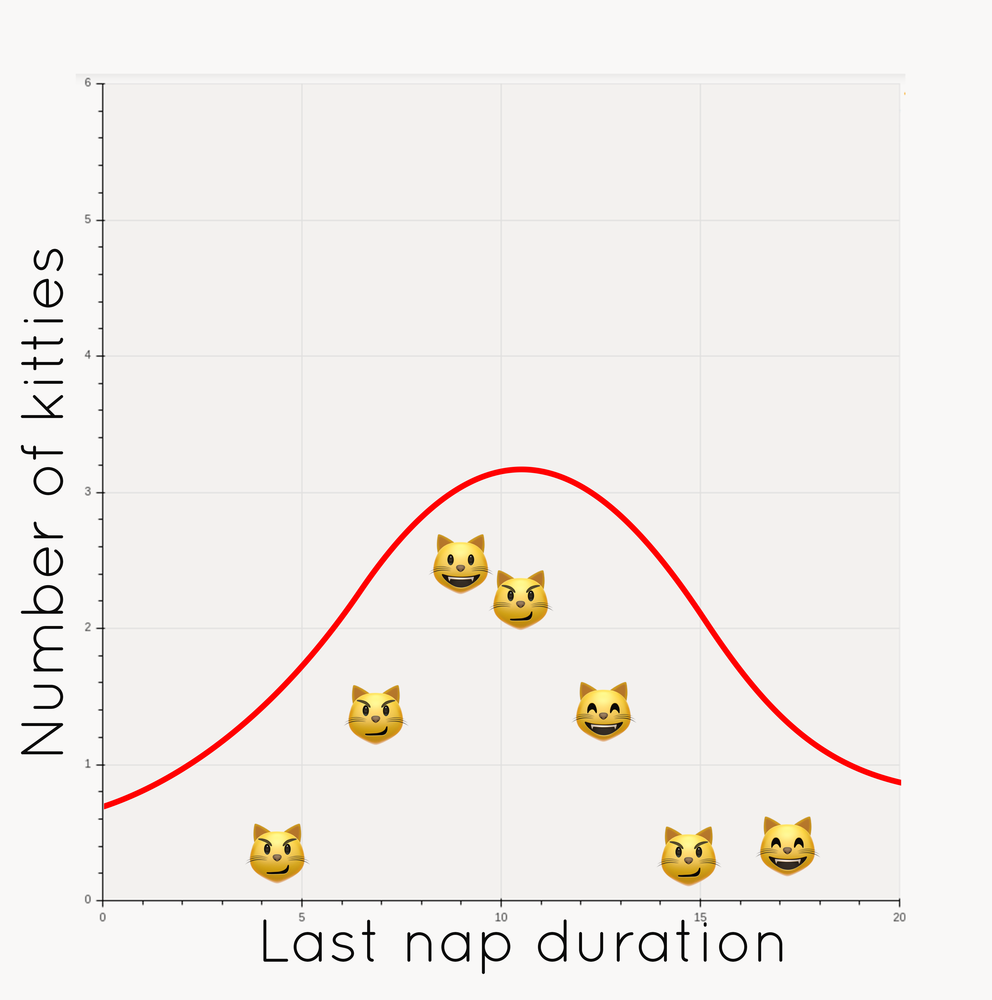
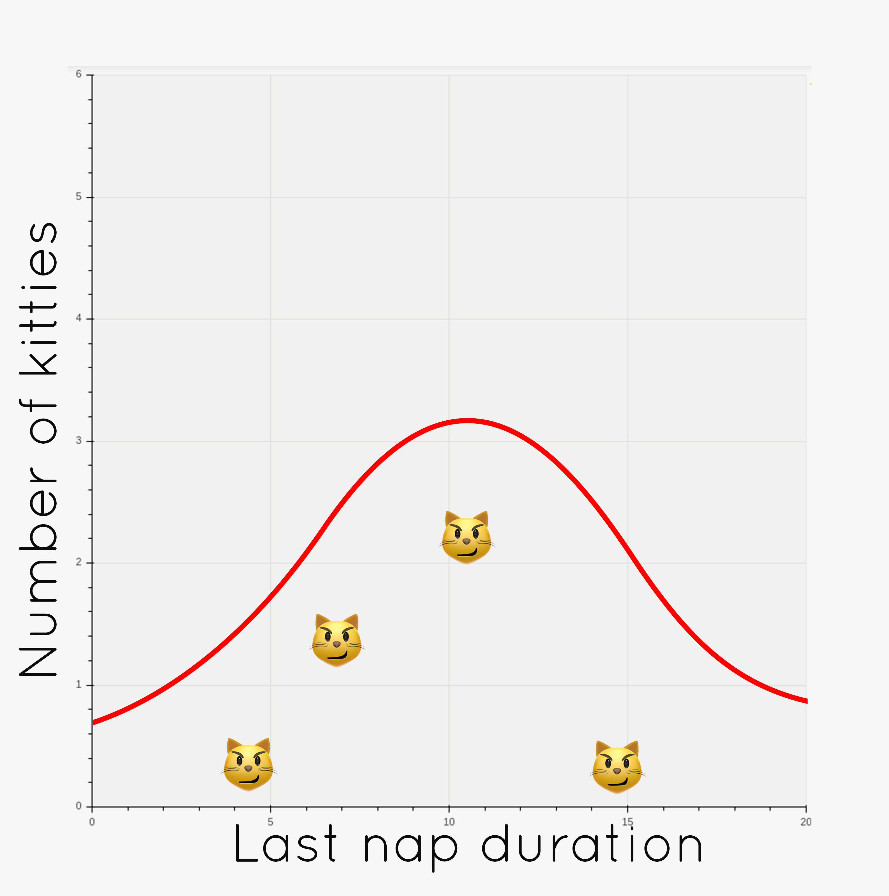
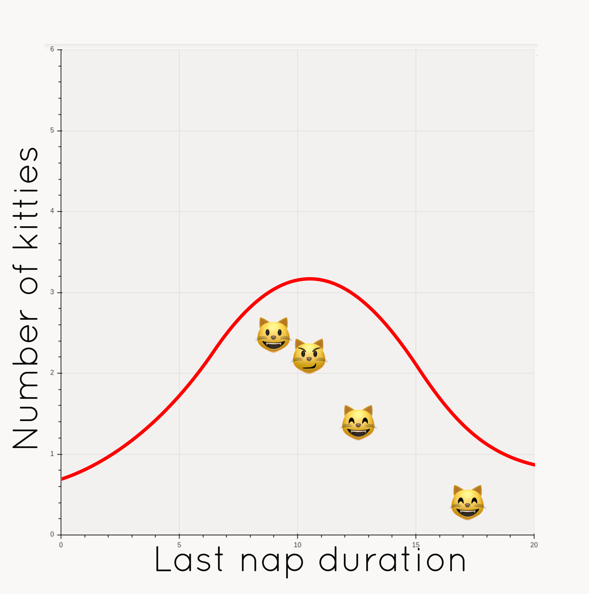
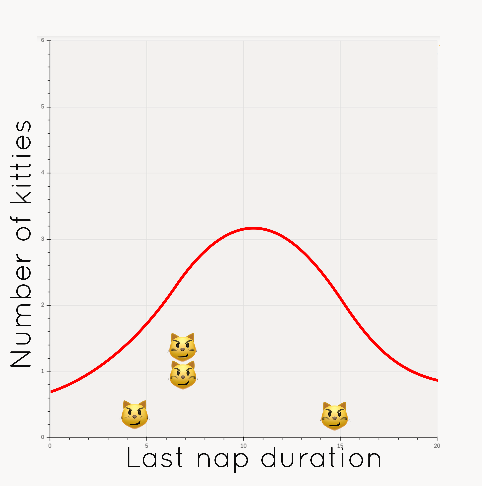

De la polysémie en milieu hybride
Sarah Diot-Girard
#MauvaiseTraductionLittérale
 @Iggdrapatate
@Iggdrapatate
De la polysémie en milieu hybride
Sarah Diot-Girard
Modèle
CREATE TABLE cat_nap(
id serial,
cat_ref varchar,
duration_range tstzrange not null,
PRIMARY KEY (id),
FOREIGN KEY (cat_ref) REFERENCES cat_name(cat_ref)
);
from django.db import models
class CatNap(models.Model):
cat_ref = models.ForeignKey(CatName, on_delete=models.CASCADE)
duration_range = models.DateRangeField()
One complication in our work arose due to conflicting technical nomenclature: "testing", "regression", "validation", "model" and other relevant terms have very different meanings to machine learning experts than they do to software engineers.
Testing and Validating Machine Learning Classifiers by Metamorphic Testing, Xie et al.
Notebook
ML
Mailing List
Machine Learning
DL
Download
Deep Learning
Gradient
Machine Learning : programmation non explicite utilisant les patterns présents dans les données pour entraîner le comportement souhaité
Modèle n.m. : truc produit par la combinaison d'un algorithme, d'hyperparamètres choisis par l'utilisateur·trice et de paramètres (ou poids) appris sur un jeu de données
On a un problème de perf dans notre cluster!
Apprentissage supervisé vs non-supervisé
Trouvé dans le backlog :
Boostrap des statistiques

Bootstrap (statistiques) : méthode d'inférence statistique basée sur la réplication multiple des données selon les techniques de rééchantillonnage
Population
 \( \mu = 11\)Echantillon
Erreur standard d'une grandeur statistique:
Echantillon
\[ \bar{x} = 10.7 \] \[ SE(\bar{x}) = 1.6 \]
Rééchantillonnage
  Estimation par bootstrap
Fréquentiste vs Bayésien
Variable
cat_nap_length_per_day_in_minutes = cat_nap_length_per_day / 60
average_cat_nap_length_per_day_in_minutes =
sum(cat_nap_length_per_day_in_minutes) / len(cat_nap_length_per_day_in_minutes)
Feature
Feature (dev)
- Vous auriez dû la livrer avant-hier.
- Crée de la dette technique.
Feature (ML)
df['dow'] = df['created_at'].dt.dayofweek- Crée de la dette technique.
Classe
import datetime
class CatNap():
def __init__(self, start_time):
self.start_time = start_time
self.end_time = None
self.duration = None
def end_nap():
self.end_time = datetime.datetime.now()
self.duration = (self.end_time - self.start_time).total_seconds()
Label
Test et validation
Régression
Classification vs régression
Régression logistique
Ecrivez un glossaire
Merci pour votre attention !
Et désolée pour les blagues pas drôles...
 @SdgJlbl
@SdgJlbl
 @SdgJlbl
@SdgJlbl

Merci à @ewjoachim pour les graphiques 😻